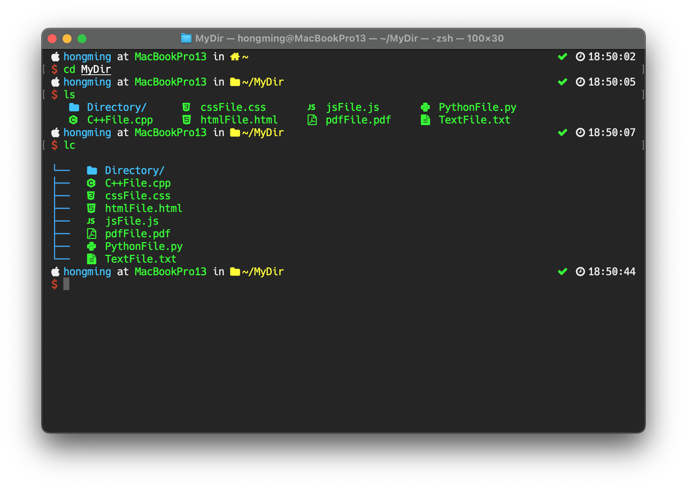

This post is to keep my terminal configuration files and information so that I can quickly rebuild my terminal in other machine. The fowllowing picture is a snapshop of my termainl, feel free to use my terminal configuration.
- Shell: Zsh
- Framework: On My Zsh
- Package Manager: Homebrew
- Plugin Manager: Antibody
- Fonts: Nerd Fonts
- Packages:
- Plugins:
To speed up the loading time for plugins, I choose to use Antibody as my plugin manager. Note that it's better to not use On My Zsh to load all your plugins if you use a lot of plugins in your termianl (like me ), because it will slow down the terminal loading time.
-
Static loading
This is probably the fastest way to load plugins. First, create the .zsh_plugin.txt file and run.
$ antibody bundle < ~/.zsh_plugins.txt > ~/.zsh_plugins.shThen put the following code into .zshrc. See line 62 in my .zshrc
source ~/.zsh_plugins.sh
My terminal fonts is Hack Regular Nerd Font Complete with Size 14. For Mac user, recommended to only install fonts that you want to use from Homebrew. To install a specific type of font in Nerd Fonts, run the follwoing command in your terminal
$ brew tap homebrew/cask-fonts && brew install --cask font-<FONT NAME>-nerd-font
$ brew tap homebrew/cask-fonts && brew install --cask font-hack-nerd-font
-
colorls
This package coloralized the ls command. This package requires Ruby and Nerd Fonts. To customize the folders' and files' icon, run the following in terminal to get the customization files.
$ cp -r $(dirname $(gem which colorls))/yaml ~/.config/colorlsI have done some customization on the icons. To use my customization, replace ~/.config/colorls/folders.yaml and ~/.config/colorls/files.yaml with this folders.yaml and files.yaml respectively.
Put an alias into .zshrc to overwrite the default command. See line 87-88 in my .zshrc
alias ls="colorls -X --dark --sort-dirs" alias lc="colorls -X --tree --dark" -
bat
This package coloralized the cat command. For Mac user, recommended install it through Homebrew. Put an alias into .zshrc to overwrite the default command. See line 85 in my .zshrc
alias cat="bat --paging=never" -
trash-CLI
This package moves files into system trash can after running rm command. Installed it through nmp. Put an alias into .zshrc to overwrite the default command. See line 86 in my .zshrc
alias rm="trash"
- zsh-syntax-highlighting
- zsh-autosuggestions
- zsh-completions
-
powerlevel9k
see this
- git
- colored-man-pages
- autojump
- pip
# If you come from bash you might have to change your $PATH.
# export PATH=$HOME/bin:/usr/local/bin:$PATH
export PATH="/usr/local/opt/python/libexec/bin:$PATH"
# Path to your oh-my-zsh installation.
export ZSH=/Users/hongming/.oh-my-zsh
# Set name of the theme to load.
POWERLEVEL9K_MODE='nerdfont-complete'
# Uncomment the following line to use case-sensitive completion.
# CASE_SENSITIVE="true"
# Uncomment the following line to use hyphen-insensitive completion. Case
# sensitive completion must be off. _ and - will be interchangeable.
# HYPHEN_INSENSITIVE="true"
# Uncomment the following line to disable bi-weekly auto-update checks.
# DISABLE_AUTO_UPDATE="true"
# Uncomment the following line to change how often to auto-update (in days).
# export UPDATE_ZSH_DAYS=13
# Uncomment the following line to disable colors in ls.
# DISABLE_LS_COLORS="true"
# Uncomment the following line to disable auto-setting terminal title.
# DISABLE_AUTO_TITLE="true"
# Uncomment the following line to enable command auto-correction.
# ENABLE_CORRECTION="true"
# Uncomment the following line to display red dots whilst waiting for completion.
COMPLETION_WAITING_DOTS="true"
# Uncomment the following line if you want to disable marking untracked files
# under VCS as dirty. This makes repository status check for large repositories
# much, much faster.
# DISABLE_UNTRACKED_FILES_DIRTY="true"
# Uncomment the following line if you want to change the command execution time
# stamp shown in the history command output.
# The optional three formats: "mm/dd/yyyy"|"dd.mm.yyyy"|"yyyy-mm-dd"
HIST_STAMPS="yyyy-mm-dd"
# Would you like to use another custom folder than $ZSH/custom?
# ZSH_CUSTOM=/path/to/new-custom-folder
# Plugin loader from oh-my-zsh, we will not load any plugin here.
# All plugins will be loaded from Antibody
plugins=()
# Oh My Zsh
source $ZSH/oh-my-zsh.sh
# colorls
source $(dirname $(gem which colorls))/tab_complete.sh
# homebrew
export PATH="/usr/local/sbin:$PATH"
# plug in (see .zsh_plugin.txt)
# Antibody
source ~/.zsh_plugins.sh
# initialize completion for zsh for zsh-completions
compinit -i -D
# User configuration
# export MANPATH="/usr/local/man:$MANPATH"
# You may need to manually set your language environment
# export LANG=en_US.UTF-8
# Preferred editor for local and remote sessions
# if [[ -n $SSH_CONNECTION ]]; then
# export EDITOR='vim'
# else
# export EDITOR='mvim'
# fi
# Compilation flags
# export ARCHFLAGS="-arch x86_64"
# Set personal aliases
alias matlab="/Applications/MATLAB_R2019a.app/bin/matlab -nodesktop -nosplash"
alias cat="bat --paging=never"
alias rm="trash"
alias ls="colorls -X --dark --sort-dirs"
alias lc="colorls -X --tree --dark"
# Format for time command
TIMEFMT=$'\nreal\t%E\nuser\t%U\nsys\t%S'
# powerlevel9k format code
# Icon
OS_ICON='\uf179'
POWERLEVEL9K_APPLE_ICON='\uf179'
POWERLEVEL9K_HOME_ICON='\uf015'
POWERLEVEL9K_HOME_SUB_ICON='\uf07b'
POWERLEVEL9K_FOLDER_ICON='\uf07b'
POWERLEVEL9K_OK_ICON='\uf00c'
POWERLEVEL9K_FAIL_ICON='\uf00d'
POWERLEVEL9K_CARRIAGE_RETURN_ICON='\uf00d'
POWERLEVEL9K_LEFT_SEGMENT_SEPARATOR=''
POWERLEVEL9K_LEFT_SUBSEGMENT_SEPARATOR=''
POWERLEVEL9K_TIME_ICON=''
POWERLEVEL9K_RIGHT_SUBSEGMENT_SEPARATOR=''
POWERLEVEL9K_RIGHT_SEGMENT_SEPARATOR=''
POWERLEVEL9K_VCS_GIT_ICON=''
POWERLEVEL9K_VCS_GIT_GITHUB_ICON=''
POWERLEVEL9K_VCS_GIT_GITLAB_ICON='\uf296'
POWERLEVEL9K_VCS_INCOMING_CHANGES_ICON='\uf01a '
POWERLEVEL9K_VCS_OUTGOING_CHANGES_ICON='\uf01b '
POWERLEVEL9K_VCS_BRANCH_ICON='\ue0a0 '
POWERLEVEL9K_VCS_STAGED_ICON='\uf055'
POWERLEVEL9K_VCS_UNSTAGED_ICON='\uf06a'
POWERLEVEL9K_VCS_UNTRACKED_ICON='\uf00d'
# prompt in new line
POWERLEVEL9K_PROMPT_ON_NEWLINE=true
# prompt in first and second line
POWERLEVEL9K_MULTILINE_FIRST_PROMPT_PREFIX=""
POWERLEVEL9K_MULTILINE_LAST_PROMPT_PREFIX="%{%F{red}%} \uf155 %{%F{white}%}"
# OS
POWERLEVEL9K_OS_ICON_BACKGROUND="none"
POWERLEVEL9K_OS_ICON_FOREGROUND="white"
# DIR
POWERLEVEL9K_DIR_HOME_BACKGROUND="none"
POWERLEVEL9K_DIR_HOME_FOREGROUND="yellow"
POWERLEVEL9K_DIR_HOME_SUBFOLDER_BACKGROUND="none"
POWERLEVEL9K_DIR_HOME_SUBFOLDER_FOREGROUND="yellow"
POWERLEVEL9K_DIR_DEFAULT_BACKGROUND="none"
POWERLEVEL9K_DIR_DEFAULT_FOREGROUND="yellow"
POWERLEVEL9K_SHORTEN_DIR_LENGTH="40"
POWERLEVEL9K_SHORTEN_STRATEGY="truncate_absolute_chars"
# STATUS
POWERLEVEL9K_STATUS_CROSS="true"
POWERLEVEL9K_STATUS_OK_BACKGROUND="none"
POWERLEVEL9K_STATUS_OK_FOREGROUND="green"
POWERLEVEL9K_STATUS_ERROR_BACKGROUND="none"
POWERLEVEL9K_STATUS_ERROR_FOREGROUND="009"
# CONTEXT
POWERLEVEL9K_CONTEXT_TEMPLATE="%{%F{039}%}%n%{%F{white}%} at %{%F{green}%}%m%{%F{white}%} in"
POWERLEVEL9K_CONTEXT_DEFAULT_BACKGROUND="none"
POWERLEVEL9K_CONTEXT_DEFAULT_FOREGROUND="white"
# VCS
POWERLEVEL9K_VCS_MODIFIED_BACKGROUND="none"
POWERLEVEL9K_VCS_MODIFIED_FOREGROUND="009"
POWERLEVEL9K_VCS_UNTRACKED_BACKGROUND="none"
POWERLEVEL9K_VCS_UNTRACKED_FOREGROUND="033"
POWERLEVEL9K_VCS_CLEAN_BACKGROUND="none"
POWERLEVEL9K_VCS_CLEAN_FOREGROUND="green"
# TIME
POWERLEVEL9K_TIME_BACKGROUND="none"
POWERLEVEL9K_TIME_FOREGROUND="white"
POWERLEVEL9K_TIME_FORMAT="\uf017 %D{%H:%M:%S}"
# Prompt emelent
POWERLEVEL9K_LEFT_PROMPT_ELEMENTS=('os_icon' 'context_joined' 'dir_joined' 'vcs_joined')
POWERLEVEL9K_RIGHT_PROMPT_ELEMENTS=('status' 'time')
robbyrussell/oh-my-zsh path:plugins/git
robbyrussell/oh-my-zsh path:plugins/colored-man-pages
robbyrussell/oh-my-zsh path:plugins/autojump
robbyrussell/oh-my-zsh path:plugins/pip
bhilburn/powerlevel9k
zsh-users/zsh-syntax-highlighting
zsh-users/zsh-autosuggestions
zsh-users/zsh-completions
.atom: "\ue764"
.git: "\uf1d3"
.github: "\uf408"
.rvm: "\ue21e"
.Trash: "\uf1f8"
.vscode: "\ue70c"
config: "\ue5fc"
folder: "\uf07b"
hidden: "\uf023"
lib: "\uf121"
node_modules: "\ue718"
ai: "\ue7b4"
android: "\ue70e"
apple: "\uf179"
audio: "\uf001"
avro: "\ue60b"
c: "\ue61e"
clj: "\ue768"
coffee: "\uf0f4"
conf: "\ue615"
cpp: "\ue61d"
css: "\ue749"
d: "\ue7af"
dart: "\ue798"
db: "\uf1c0"
diff: "\uf440"
doc: "\uf1c2"
docker: "\uf308"
ebook: "\ue28b"
env: "\uf462"
epub: "\ue28a"
erl: "\ue7b1"
file: "\uf15b"
font: "\uf031"
gform: "\uf298"
git: "\uf1d3"
go: "\ue626"
gruntfile.js: "\ue74c"
hs: "\ue777"
html: "\uf13b"
image: "\uf1c5"
iml: "\ue7b5"
java: "\ue204"
js: "\ue74e"
json: "\ue60b"
jsx: "\ue7ba"
less: "\ue758"
log: "\uf18d"
lua: "\ue620"
md: "\uf48a"
mustache: "\ue60f"
npmignore: "\ue71e"
pdf: "\uf1c1"
php: "\ue73d"
pl: "\ue769"
ppt: "\uf1c4"
psd: "\ue7b8"
py: "\uf81f"
r: "\uf25d"
rb: "\ue21e"
rdb: "\ue76d"
rss: "\uf09e"
rubydoc: "\ue73b"
sass: "\ue603"
scala: "\ue737"
shell: "\uf489"
sqlite3: "\ue7c4"
styl: "\ue600"
v: "\uf493"
sv: "\uf493"
tex: "\ue600"
ts: "\ue628"
twig: "\ue61c"
txt: "\uf15c"
video: "\uf03d"
vim: "\ue62b"
windows: "\uf17a"
xls: "\uf1c3"
xml: "\ue619"
yarn.lock: "\ue718"
yml: "\uf481"
zip: "\uf410"